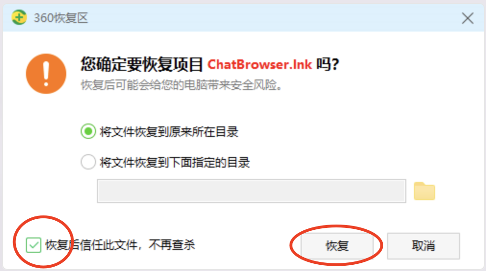
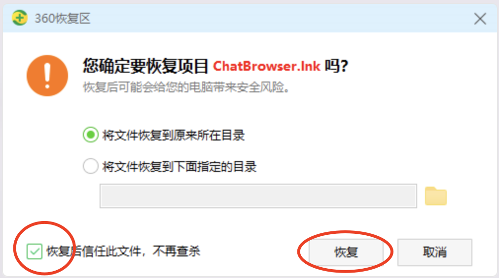

杀毒误报解决方法
←从左边侧边栏选择你的杀毒软件
360添加信任
- 点主界面右上角的盾版

 

Windows 安全中心
如果被windows 内置的杀毒误杀，可以选择从隔离区恢复，或添加排除项。两个操作二选一
方法一：隔离恢复
1. 进入windows 安全中心（windows security）

2. 打开”保护历史记录“（protection history）

3. 筛选 已隔离的项目
4. 选择要保留的项目，然后选择还原
方法２：添加排除项
1. 进入windows 安全中心（windows security）
2. 病毒和威胁防护设置->管理设置